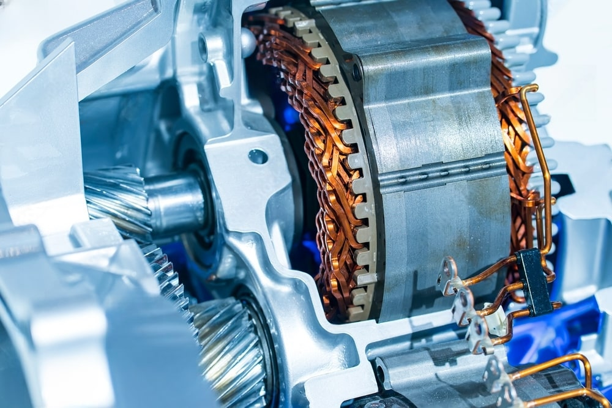

elektro varikliu remontas | elektros varikliu remontas | elektriniu varikliu remontas | el varikliu remontas | apviju pervyniojimas | el varikliu remontas vilniuje | el varikliu remontas vilnius | elektriniu varikliu taisymas | elektriniu varikliu remontas vilniuje | elektro varikliu remontas vilniuje | kaitlenciu restauracija vilniuje | kaitlenciu restauravimas vilniuje | kaitlenciu remontas | kaitlentes remontas | pramoniniu kaitlenciu remontas vilnius | indukcines kaitlentes remontas | indukciniu kaitlenciu remontas | kaitlenciu remontas vilnius | kaitlentes remontas vilniuje | kaitlentes restauracija | kaitlentes restauravimas | pramonines kaitlentes remontas | remontas kaitlentes | Asinchroninių Elektros Variklių Remontas | Servo Elektros Variklių Remontas | sinchroninių elektros Variklių Remontas | Asinchroninių Variklių Remontas | Servo Variklių Remontas | sinchroninių Variklių Remontas | Būgninių variklių remontas | bugninio variklio remontas | Elektriniu Būgninių variklių remontas | Elektros bugninio variklio remontas
„Enrepa": Vilniaus elektros variklių ir kaitlenčių remontas Profesionalus asinchroninių, sinchroninių, servo ir būgninių elektros variklių remontas ir pervyniojimas. Indukcinių ir pramoninių kaitlenčių remontas ir restauravimas. Patikimumas, kokybė ir operatyvumas!
PREKINTIS
Enrepa – Patikimas Elektrinių Variklių
Remontas Vilniuje
Enrepa – Patikimas Elektrinių Variklių Remontas Vilniuje
„Enrepa“ – profesionalus elektros variklių remonto centras Vilniuje. Atliekame įvairių tipų elektrinių variklių remontą, apvijų pervyniojimą ir techninę priežiūrą. Užtikriname greitą ir kokybišką aptarnavimą, kad jūsų įranga veiktų sklandžiai ir patikimai. Pasitikėkite mūsų patirtimi!
Servo Elektros Variklių Remontas
Enrepa – Elektros Variklių Remonto Ekspertai
„Enrepa“ – patikimas partneris elektros variklių remonto srityje. Teikiame profesionalias asinchroninių, sinchroninių ir servo elektros variklių remonto paslaugas, užtikrindami aukščiausią kokybę ir ilgaamžiškumą. Mūsų specialistai greitai ir efektyviai atkuria variklių veikimą, kad jūsų įranga veiktų sklandžiai ir patikimai.
Bugninio variklio remontas
Enrepa – Būgninių Variklių Remonto Profesionalai
„Enrepa“ – specializuotas elektrinių būgninių variklių remonto centras. Atliekame visapusišką būgninių variklių diagnostiką, remontą ir techninę priežiūrą, užtikrindami sklandų bei patikimą jų veikimą. Pasitikėkite mūsų patirtimi ir aukščiausios kokybės paslaugomis!
Kaitlenčių remontas
Enrepa – Kaitlenčių Remonto ir Restauracijos Ekspertai Vilniuje
„Enrepa“ – profesionalus kaitlenčių remonto ir restauracijos centras Vilniuje. Atliekame tiek buitinių, tiek pramoninių kaitlenčių remontą, įskaitant indukcinių modelių priežiūrą ir atkūrimą. Užtikriname kokybišką, greitą ir patikimą aptarnavimą, kad jūsų įranga veiktų kaip nauja. Pasitikėkite mūsų patirtimi!